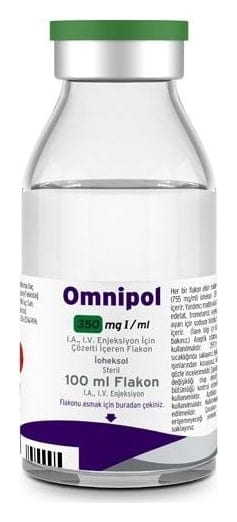

Omnipol 350 mgi/ml IA, IV Enjeksiyon İçin Çözelti İçeren Flakon, 100 ml

Ne için kullanılır
KT · Bölüm 1OMNİPOL 350, Avrupa Farmakopesi Tip I kalitesinde renksiz dayanıklı borosilikat cam şişelerde, şişe hacimleri 1x50 mL, 1x100 mL ve 1x200mL’dir. Tüm ambalaj büyüklükleri piyasada olmayabilir.
Bu ürün, ioheksol adı verilen bir etkin maddeyi içerir ve sadece tanı amaçlı kullanım içindir. Sadece bir hastalığın teşhisini koymak için kullanılır, tedaviye yönelik kullanımı yoktur.
OMNİPOL bir “kontrast madde”dir. Bir röntgen uygulamasından önce verilerek doktorun çekeceği filmin daha net olmasını sağlar. Enjekte edildikten sonra, doktorunuzun vücudunuzdaki bazı organların şekil ve görünümlerinin normal olup olmadığını ayırt edebilmesine yardımcı olur. İdrar yollarınızın, omurganızın veya kan damarlarınızın (kalpteki kan damarları dahil) röntgeninin çekilmesi için kullanılabilir.
Bu ilaç size, bilgisayarlı tomografi adı verilen bir yöntemle baş veya vücudunuzun taranması öncesinde veya sırasında da verilebilir. Bu tip taramada röntgen ışınları kullanılır. Bu ilaç, tükrük bezlerinizin, mide ve barsaklarınızın veya eklem, rahim veya over tüpleri gibi vücut boşluklarınızın incelenmesi için de kullanılabilir.
Doktorunuz vücudunuzun hangi kısmının inceleneceğini açıklayacaktır.